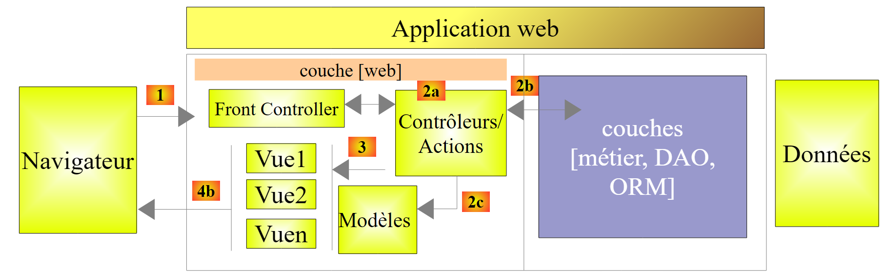
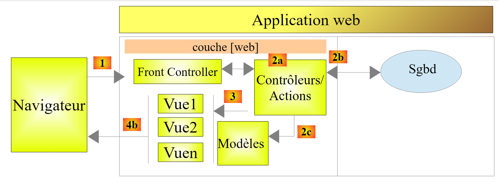
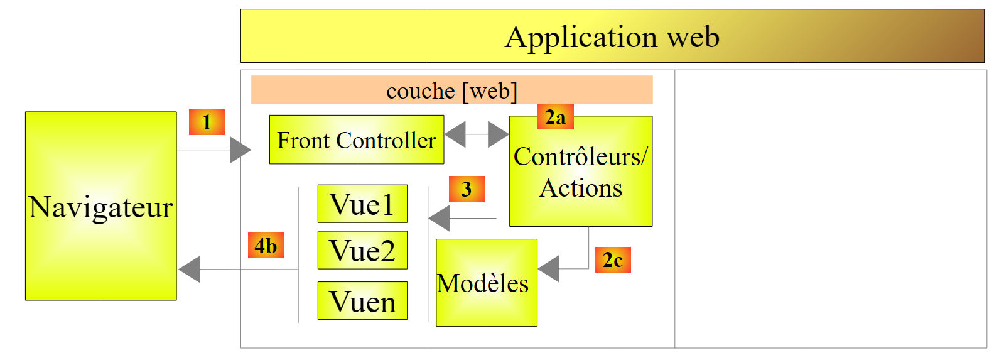

1. Introduction
The PDF for this document is available |HERE|.
The examples in this document are available |HERE|.
Here, we aim to introduce, using examples, the key concepts of ASP.NET MVC, a web framework.NET, which provides a framework for developing web applications based on the MVC (Model–View–Controller) pattern.
Understanding the examples in this document requires few prerequisites. Only basic knowledge of the C# language is necessary. This can be found in the document Introduction to the C# Language at URL [http://tahe.developpez.com/dotnet/csharp]. A case study is provided to put the knowledge gained into practice on ASP.NET MVC. It uses the ORM (Object Relational Mapper) Entity Framework. This ORM is presented in the document Introduction to Entity Framework 5 Code First available at URL [http://tahe.developpez.com/dotnet/ef5cf].
The various examples in this document are available at URL and [http://tahe.developpez.com/dotnet/aspnetmvc] as a downloadable ZIP file.
This document is incomplete in many respects. For further information on ASP.NET MVC, the following references may be consulted:
- [ref1]: the book "Pro ASP.NET MVC 4" written by Adam Freeman and published by Apress. It is an excellent book. If it were available online for free and in French, this document would be unnecessary. I recommend that anyone who can do so learn ASP.NET MVC using this book. The source code for the book’s examples is available for free at URL [http://www.apress.com/9781430242369];
- [ref2]: the [http://www.asp.net/mvc] framework website. There you will find all the materials needed for self-study. A French version is available at URL [http://dotnet.developpez.com/mvc/ ];
- the [developpez.com] website dedicated to ASP.NET and [http://dotnet.developpez.com/aspnet/ ].
The document has been written so that it can be read without a computer at hand. Therefore, many screenshots are provided.
1.1. The role of ASP.NET MVC in a web application
First, let’s situate ASP.NET MVC within the development of a web application. Most often, this will be built on a multi-layer architecture such as the following:
 |
- The [Web] layer is the layer that interacts with the web application user. The user interacts with the web application through web pages displayed in a browser. It is in this layer that ASP.NET and MVC are located, and only in this layer;
- The [métier] layer implements the application's business rules, such as calculating a salary or an invoice. This layer uses data from the user via the [Web] layer and from SGBD via the [DAO] layer;
- the [DAO] layer (Data Access Objects), the [ORM] layer (Object Relational Mapper), and the ADO connector.NET manages access to the data in SGBD. The [ORM] layer bridges the objects handled by the [DAO] layer and the rows and columns of tables in a relational database. Two ORM are commonly used in the .NET, NHibernate (http://sourceforge.net/projects/nhibernate/ ) and Entity Framework (http://msdn.microsoft.com/en-us/data/ef.aspx);
- the integration of the layers can be achieved using a dependency injection container such as Spring (http://www.springframework.net/);
Most of the examples provided below will use only a single layer, the [Web] layer:
 |
However, this document will conclude with the construction of a multi-layer web application:
 |
1.2. The ASP.NET MVC
ASP.NET MVC implements the so-called MVC architecture model (Model–View–Controller) as follows:
 |
The processing of a client request proceeds as follows:
- request - The requested URL requests are in the format http://machine:port/context/Controller/Action/param1/param2/....?p1=v1&p2=v2&... The [Front Controller] uses a configuration file to "route" the request to the correct controller and the correct action within that controller. To do this, it uses the [Controlleur/Action] path from the URL. The remaining parameters in URL and [/param1/param2/...] are optional parameters that will be passed to the action. The C in MVC is the string [Front Controller, Contrôleur, Action]. If the path [Controlleur/Action] does not lead to an existing controller or an existing action, the web server will respond that the requested URL was not found.
- processing
- The selected action can use the parami parameters that [Front Controller] passed to it. These can come from several sources:
- the [/param1/param2/...] path of the URL,
- the [p1=v1&p2=v2] parameters from the URL,
- from parameters posted by the browser with its request;
- during the processing of the user's request, the action may require the [métier] and [2b] layers. Once the client's request has been processed, it may trigger various responses. A classic example is:
- an error page if the request could not be processed correctly
- a confirmation page otherwise
- the action instructs a specific view to be displayed [3]. This view will display data known as the view model. This is the M in MVC. The action will create this model M [2c] and request that a view V be displayed [3];
- response—the selected view V uses the model M constructed by the action to initialize the dynamic parts of the response HTML that it must send to the client, then sends this response.
Now, let’s clarify the relationship between web architecture MVC and layered architecture. Depending on how the model is defined, these two concepts may or may not be related. Let’s consider a single-layer web application ASP.NET MVC:
 |
If we implement the [Web] layer with ASP.NET and MVC, we will indeed have a MVC web architecture but not a multi-layer architecture. Here, the [Web] layer will handle everything: presentation, business logic, and data access. These are the actions that will perform this work.
Now, let’s consider a multi-layer web architecture:
 |
The [Web] layer can be implemented without a framework and without following the MVC model. We do then have a multi-layer architecture, but the Web layer does not implement the MVC model.
Thus, the [Web] layercan be implemented with ASP.NET and MVC, resulting in a layered architecture with a [Web] layer of the MVC type. Once this is done, we can replace this ASP.NET MVC layer with a standard ASP.NET layer (WebForms) while keeping the rest (business logic, DAO, ORM) unchanged. We then have a layered architecture with a [Web] layer that is no longer of type MVC.
In MVC, we stated that the M model was that of the V view, c.a.d—the set of data displayed by the V view. Another definition of the M model of MVC is provided:
 |
Many authors consider that what is to the right of the layer [Web] forms the model M of MVC. To avoid ambiguities, we can refer to:
- the domain model when referring to everything to the right of the [Web] layer
- the view model when referring to the data displayed by a view V
Hereinafter, the term "M model" will refer exclusively to the model of a view V.
1.3. The tools used
Moving forward, we are using (as of September 2013) the Express versions of Visual Studio 2012:
- [http://www.microsoft.com/visualstudio/fra/products/visual-studio-express-for-windows-desktop ] for desktop applications;
- [http://www.microsoft.com/visualstudio/fra/products/visual-studio-express-for-Web ] for web applications.
To install the latest versions of these products, you can use Microsoft’s [Web Platform Installer] (http://www.microsoft.com/Web/downloads/platform.aspx).
In addition, use Google’s Chrome browser (http://www.google.fr/intl/fr/chrome/browser/). Add the [Advanced Rest Client] extension . You can proceed as follows:
- Go to the [Google Web store] website (https://chrome.google.com/webstore) using the Chrome browser;
- search for the [Advanced Rest Client] app:
 |
- the app is then available for download:
 |
- to get it, you’ll need to create a Google account. [Google Web Store] then asks for confirmation [1]:
 |
- In [2], the added extension is available in the option [Applications] [3]. This option is displayed on every new tab you create (CTRL-T) in the browser.
1.4. Examples
Most of the learning examples will be limited to the Web layer only:
 |
Once you have completed this tutorial, we will introduce a multi-tier web application:
 |